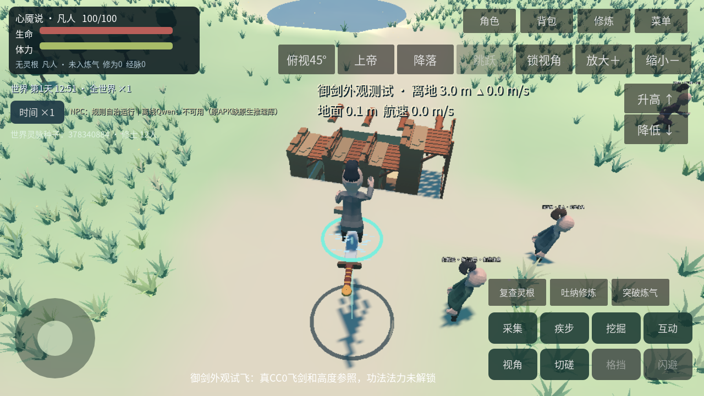
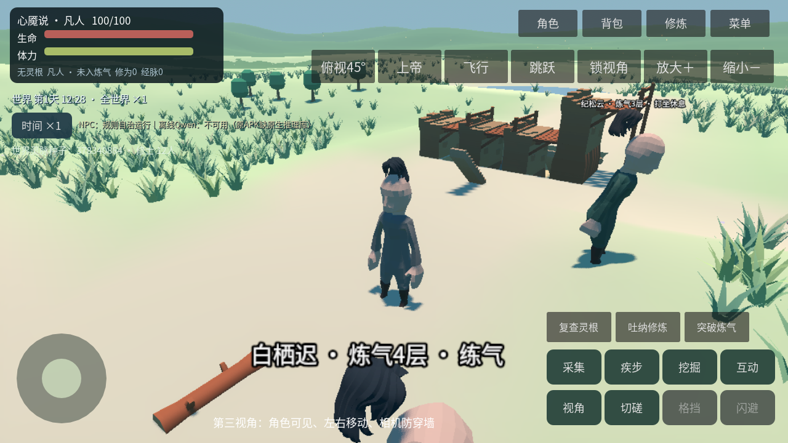
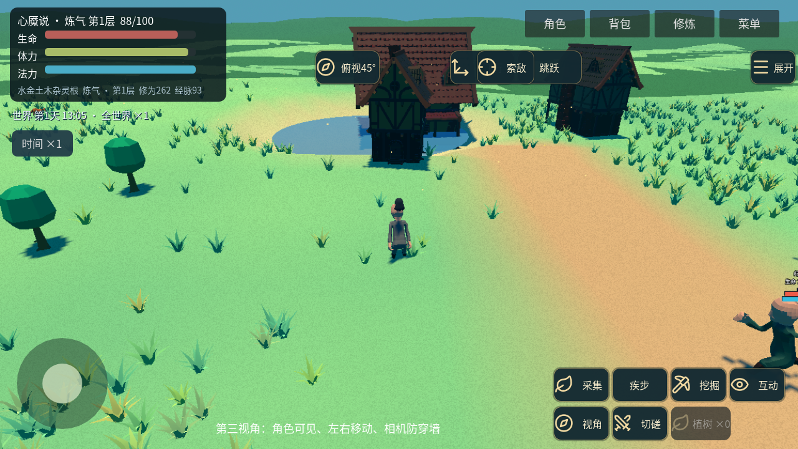
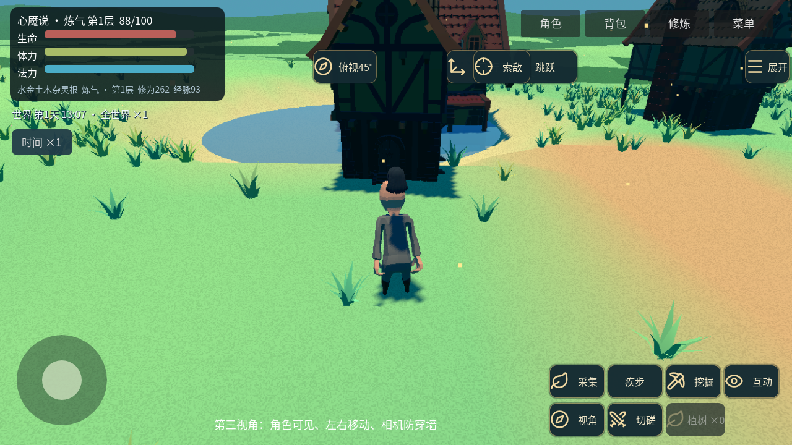
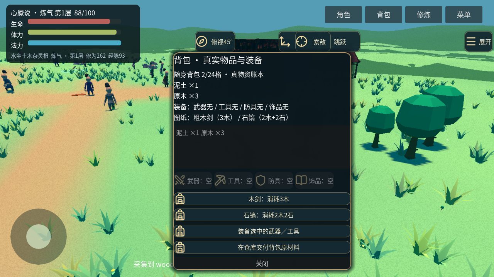

698项素材需求
覆盖26大类：地形、建筑、角色、道具、生态、动画与特效。支持手机端搜索和分类筛选。
苍生有命 · 山河有生
这不是一段围绕主角展开的故事。山河万里，城镇万千，农人、商旅、侠客、将士和每一个无名之人，都有自己的一生。
GPT-6 与 Work 的实际工作以GitHub提交、工作流事件为准。构建排队、运行、失败或成功均展示；网页每2分钟刷新官方静态数据，不直接轮询GitHub API。没有新的事件，不等于开发者一直在后台运行。
读取最近构建状态…
等待实际提交/PR事件…
此处显示真实构建任务及最后事件时间；若事件过期，将明确标为待确认。
概念海报就是官网主角。目标是如同国风CG仙侠动画般的山河城镇、人物皮肤和衣料表现、万千鲜活NPC。这些海报和氛围摄影是长期美术目标，不是现阶段实机画质的完成证明。


重要说明：本栏目包含原创排版概念海报、国风气氛参考及经授权的摄影素材，不是Godot实机截图，不代表这些场景、人物或画质已经制作完成。真实可玩效果以安装包与实际游戏画面为准。
素材制作清单、分类、编号与状态公开可查。黄色呼吸灯代表可制作、尚未验收；绿色仅代表已上传且通过QA。历史图鉴和待修复切图不计入正式完成数。
覆盖26大类：地形、建筑、角色、道具、生态、动画与特效。支持手机端搜索和分类筛选。
黄色呼吸灯为待制作；绿色为合格入库；未完成不冒充已制作。
已有候选图集与历史切图保留在仓库，等待审核；独立合格贴图将按ID登记。
已通过公开仓库真实Godot场景启动、石砖路接缝检查与Android ARM64导出，提供可以在手机安装的独立候选场景APK。它使用独立包名及临时调试签名，不是原有《苍岚》正式APK的补丁或覆盖升级；请保留原版游戏和存档。建筑图集尚未达到正式高清美术验收标准。
下载HD2D独立测试APK · 约27MB ↗ 查看真实构建与Godot验收记录
版本：候选场景 a447e5712645 · SHA256见校验文件。独立测试包若无法覆盖安装之前的独立测试版本，请只卸载该独立测试应用，不要卸载原《苍岚》游戏。
目前已开通正式签名的游戏内内容热更新：兼容的模型、场景、配置和脚本可通过安全资源补丁更新；涉及 Godot 引擎或 Android 原生组件的变更仍需同证书覆盖安装新 APK。正式更新与开发草案请分别查看下方更新日志和工作日志。
当前正在配置正式签名及公开补丁发布。客户端可以离线运行，绝不会安装未经验证的补丁。
以下两张画面来自原版《苍岚》APK176同一个Godot 4.4.1主游戏场景，由Linux引擎直接渲染、自动截图并经原游戏QA检查；不是AI概念图，也不是手机实机截图。rev203飞行操作技术测试通过，但人物站姿、头部、场景细节和UI观感仍未通过人工美术验收。


以下是本次已通过Godot4.4.1原APK176场景和RSA签名发行的真实引擎截图，非AI生成图或手机拍摄。开源Quaternius整房、瓦面法线/木纹、真实地层64细texel/米和精简Lucide UI已集成；树林密度、国风建筑匹配度和近景人物仍有明显不足，不宣称达到最终概念画质。



安卓安装：下载安装原签名APK176（约73MB） → 启动游戏检查更新到 rev205（新增35MB签名PCK）。不必卸载老游戏。游戏内容资源包可独立下载，但PCK不是可直接安装的APK。公网SHA256+RSA与HTTP206验收已通过；Android手机实机视角/帧率/发热尚待验收。
官网自动同步项目正式工作日志：已完成、失败、待处理都如实保留。记录来自源码主分支，测试成功不等于已经正式发布或通过玩家审美验收。
正在读取已发布的工作日志。请稍候。
只列入真实发布的签名更新，不把开发中的人物、美术草案或尚未通过的功能冒充正式内容。最新版本直接读取官方RSA签名清单。
正在读取正式发布记录…
正式更新以游戏内数字签名、SHA-256和兼容性校验为准；网页仅供查询。
游戏测试反馈、版本体验、人物建模、动作BUG和开发方向，都欢迎来官方测试群交流。
QQ群使用你提供的官方邀请链接；QQ会话受客户端兼容性影响，复制号码也可以添加。抖音目前是账号搜索入口，尚未获取经验证的直达主页地址。
不靠堆砌 UI 描述世界，而让地形、建筑和物品在同一个空间里相互影响。
NPC、物资和时间有独立状态与因果，不因玩家存在而失去真实逻辑。
代码与密钥不在公共发布站，发布的资源先经验证才能进入玩家世界。
官网已发布经过验证的 Android v165 APK；正在检查是否有更新版本。
始终在本官网选择下载；下载按钮会自动跟随已核验的新版本。如果在微信/QQ/ChatGPT内置浏览器打不开，请点击“复制下载地址”，在 Chrome 或系统浏览器中粘贴打开。直接覆盖安装，不要卸载旧版。
当前已发布同签名 Android 横屏基础包及独立内容补丁；已安装旧版的玩家可在游戏内检查可兼容的热更新。升级 APK 请同签名覆盖安装，勿先卸载以免清除本地存档。游戏画质和操作效果仍以实机测试为准；网页显示版本信息不替代游戏本身的 RSA 验签。